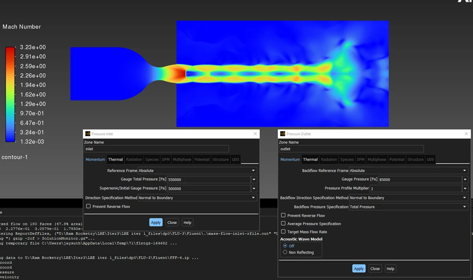
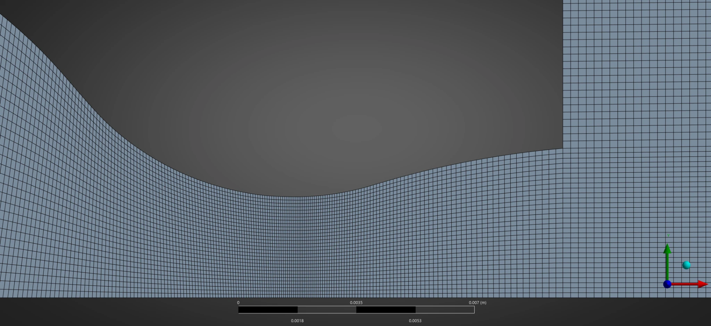
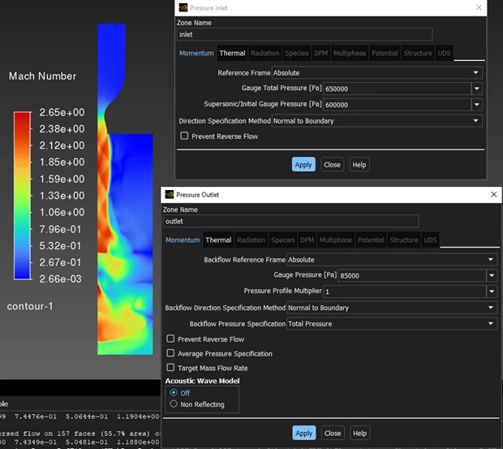
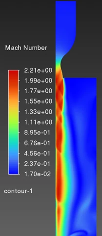
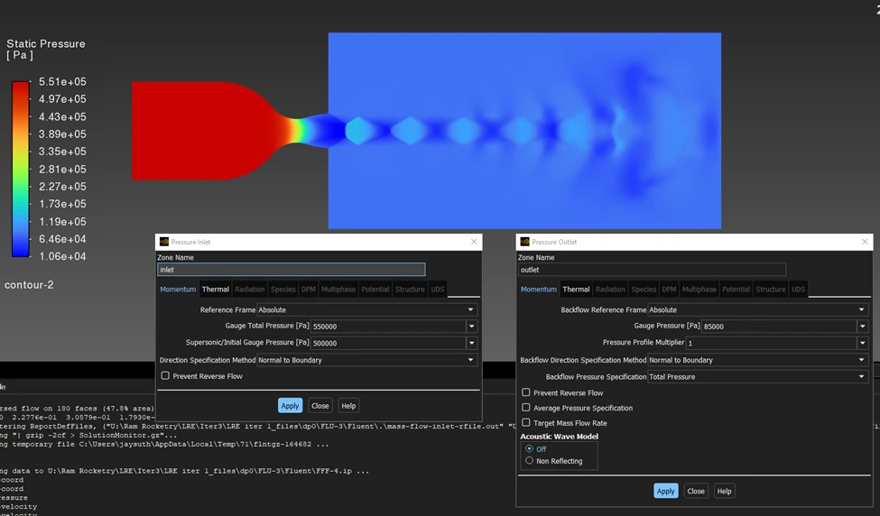

Liquid Rocket Engine Nozzle CFD
CFD of the prototype nozzle for Ram Rocketry's student liquid rocket engine, from an initial prototypes and simulations document I co-wrote with Ian Leary. I launched the club's liquid engine program, which targets IREC 2028.
My focus: Building, refining, and converging the Ansys Fluent mesh for the prototype nozzle, and running the contour plots shown here.

- Tool
- Ansys Fluent
- Runs shown
- V1, V2, final
- Peak Mach, final run
- 3.23
- Input pressures, final run
- Dummy values
Mesh
I used structured quadrilateral cells across the convergent section, the divergent section, and the domain beyond the exit. Cells are finest at the throat and get coarser moving away from it.

Iterations
V1 ran at an inlet gauge total pressure of 650,000 Pa, an initial gauge pressure of 600,000 Pa, and an outlet gauge pressure of 85,000 Pa. It peaked at Mach 2.65, and the jet broke up partway down the domain. V2 peaked at Mach 2.21, and the jet stayed more coherent. The figure does not show the V2 boundary conditions.


Final run
The final run used an inlet gauge total pressure of 550,000 Pa, an initial gauge pressure of 500,000 Pa, and an outlet gauge pressure of 85,000 Pa. It peaked at Mach 3.23, with static pressure from about 551,000 Pa down to about 10,600 Pa. The plume shows a repeating diamond pattern downstream of the exit, which breaks down near the outlet.

Limits
The final-run pressures are dummy inputs, not engine operating conditions, so these plots are not engine performance predictions. The solver console in the final-run screenshots reports reversed flow on 180 faces, 47.8% of the area. I have not compared these results with test data.